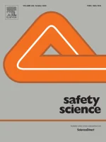

The overlooked burden of moderate temperatures on fire services
Safety Science, 2026 · 202, 107268

Fire incidents are strongly influenced by ambient temperature, yet research on temperature-related fire service burden has focused narrowly on extremes. Although moderate temperatures are typically considered less consequential per event, their high frequency may generate substantial cumulative burden. Using 222,884 fire service records from Jiangsu Province, China, we apply a distributed lag nonlinear model within a two-stage time-series framework to quantify the temperature-fire service relationship, which exhibits a U-shaped pattern with stronger associations at more extreme temperatures. We then estimate and compare the attributable burdens arising from high-frequency, low-impact moderate temperatures and low-frequency, high-impact extreme temperatures. We show that the cumulative burden attributable to extremes is less than one-sixth that of moderate temperatures. Counterfactual analyses further reveal that a 10% increase in adaptation to moderate temperatures would yield nearly eight times the benefit of an equivalent increase in adaptation to extremes, comparable to improving adaptation to extremes by 60%. Projections suggest that the predominance of moderate temperatures will persist under future climate change. These findings highlight that frequent moderate temperatures are an overlooked yet major driver of fire service burden and should be integrated into risk assessment and adaptation planning.